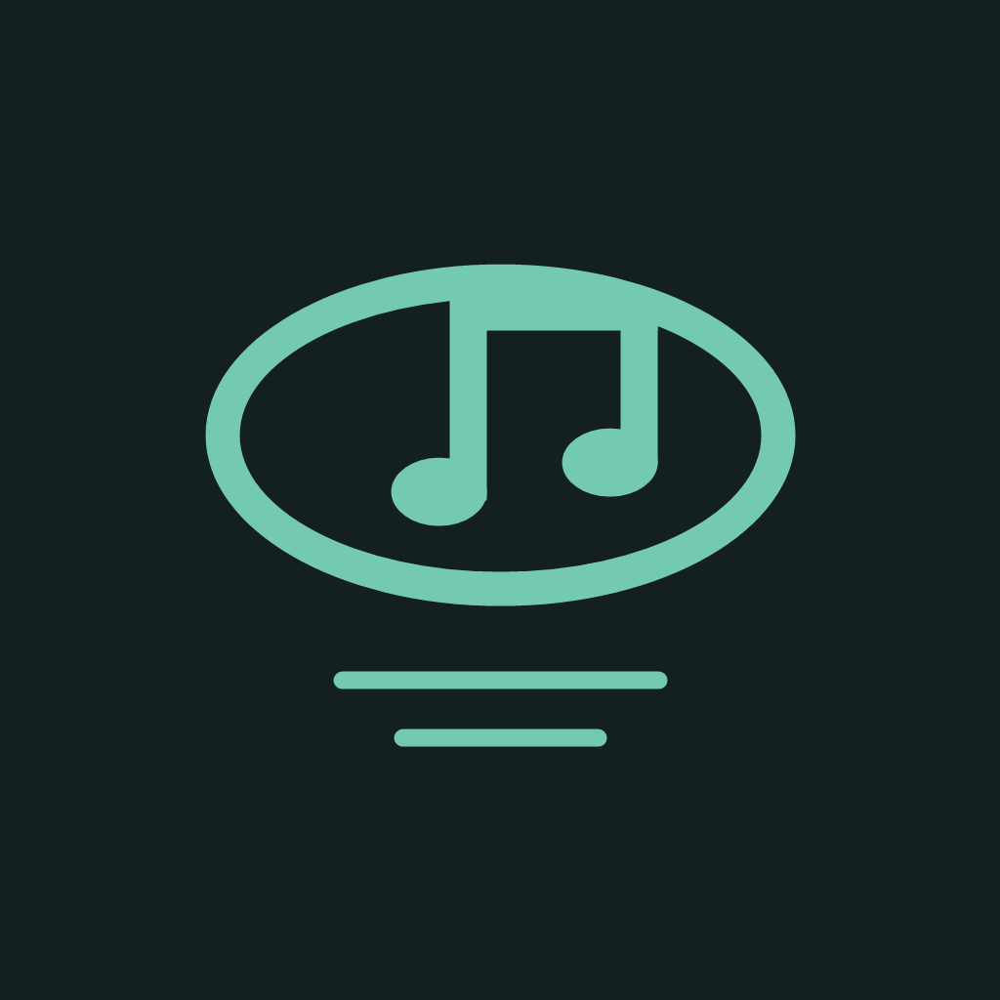

連接熟悉的音樂
讀取 Apple Music 系統播放器。偵測歌名、播放時間與暫停狀態，讓歌詞跟隨你的播放進度。

歌詞島LYRICS ISLAND · FOR IPHONE
把正在播放的音樂，變成看得見的歌詞。
一點薄荷綠，一句剛剛好的節奏。
iOS 17 或以上 · App Store 尚未上架
歌詞島
微風輕輕穿過海洋
把每一句收藏在心上
跟著節奏慢慢歌唱
YOUR MUSIC, YOUR PACE
讀取 Apple Music 系統播放器。偵測歌名、播放時間與暫停狀態，讓歌詞跟隨你的播放進度。
以 0.1 秒為單位提前或延後歌詞，範圍為 −10 至 +10 秒。每首歌分別保存，下一次聆聽也能沿用。
從 LRCLIB 尋找帶時間軸的歌詞。找不到合適版本時，可匯入你有權使用的 UTF-8 LRC 檔案。
LIVE ACTIVITY
即時動態顯示歌名與目前歌詞；支援動態島的 iPhone 可長按展開，其他機型可查看鎖定畫面即時動態。App 歌詞會換行並自動捲動至目前句子；動態島可啟用長句捲動實驗。
自用版可選無聲音訊嘗試背景同步，iOS 26 亦可選系統背景會話。中斷後需回到 App 恢復，不能保證永久執行。動態島的布局與更新頻率由 iOS 控制。
THREE SIMPLE STEPS
設定步驟、常見問題與資料處理方式，都在這裡。